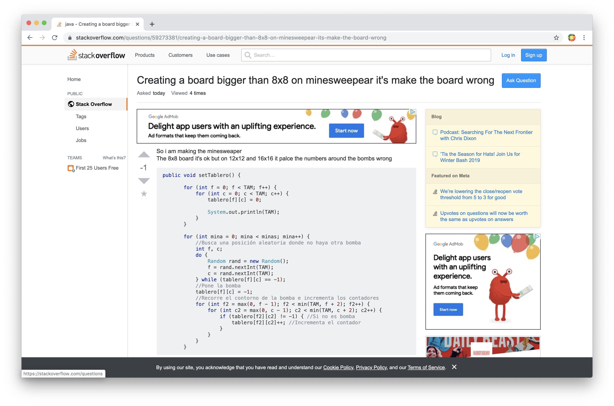
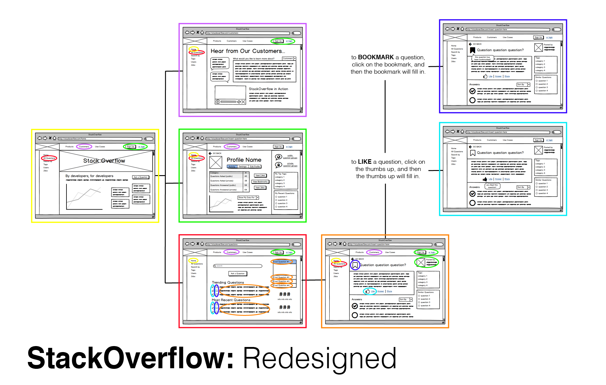
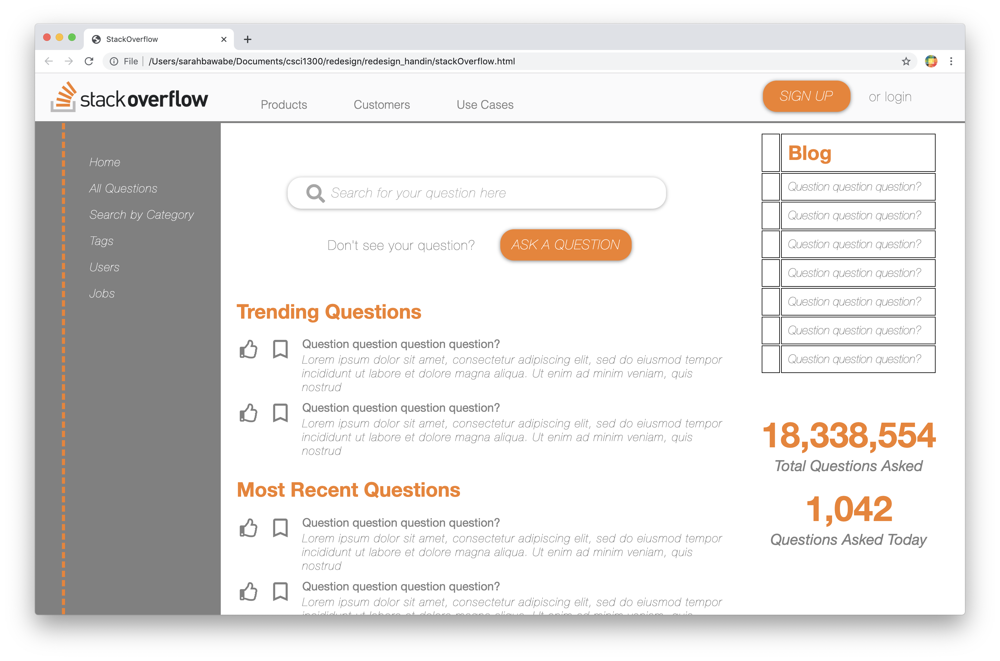

StackOverflow is a website used for asking and answering technical questions online. However, many of its components and features are unclear to the user and, in my opinion, can be deemed unnecessary. Below is a snapshot of the Questions page on the StackOverflow website, the page that users will be brought to first when looking for a question.
Download full writeup here: redesignHandin.pdf
View original website here: https://stackoverflow.com/questions
While some pages on this website do have a clearer design, the main purpose and use of StackOverflow is to ask and answer questions, so it is critical that the Questions page be simple and easy to use, given that it is so integral to the site’s overall purpose. Similarly, when a question is clicked on, the specific Question page also leaves the user unclear about many features.
While the scope of this project was simply to redesign one page of this website, in order to one day further this project a flowchart of each redesigned wireframe was created. This flowchart is shown below.
This new design (see below) is much simpler, and employs only the more necessary features. More logical icons are used (thumbs up for “Like” and bookmark for “bookmark”) so that both new users and returning users can clearly and efficiently understand how to utilize these features. Since the main focus of this website is to ask and answer questions, I chose to emphasize the search bar and the “Ask a Question” button, unlike the original design which hid these in the corner of the screen. I also used a new color palette which better reflects the theme colors of StackOverflow—greys, oranges, and whites. Before, the website used a variety of blues, yellows, and more which felt very out-of-place. This new design also employs a grid design, which clearly organizes the website and creates a less cluttered feel.
To see the finalized redesign of StackOverflow's homepage, visit the link below.
click to view redesign! 